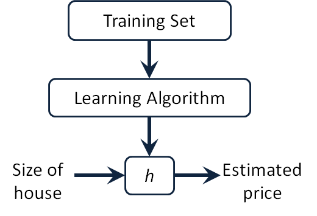
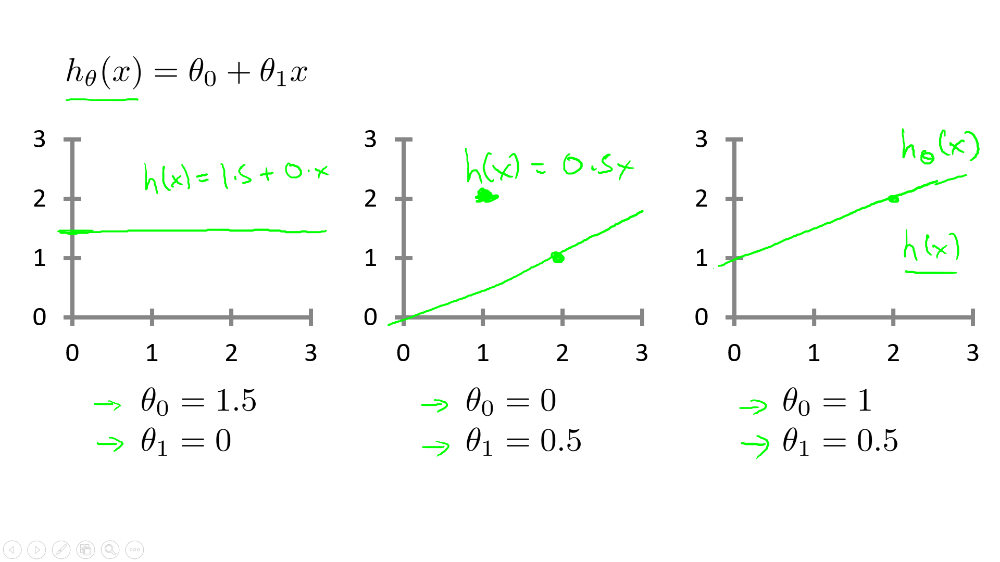

一. 单变量线性回归
1. 模型描述
参考视频: 2 - 1 - Model Representation (8 min).mkv
1.1 举例引入
我们这里有一个俄勒冈州波特兰市的住房价格的数据集，数据集包含：房屋尺寸，房屋出售价格......然后，你有一个朋友。他有一套1250平的房子，他需要你告诉他这房子能卖多少钱。我们该怎么做？
1.2 模型描述
1.1 中的部分数据集如下表所示：
| Size in \(feet^2 (x)\) | Price ($) in \(1000's (y)\) |
|---|---|
| 2104 | 460 |
| 1416 | 232 |
| 1534 | 315 |
| 852 | 178 |
| … | … |
上述数据集，我们通常称为训练集（training set）。
为了方便描述和后面公式推导将这个问题进行如下标记（Notion）：
| \(m\) | 样本数量（number of training examples ） |
| \(x\) | 输入变量/特征（input of variable/features） |
| \(y\) | 目标变量/输出变量（output variable / target variable） |
| \((x, y)\) | 一个样本（one training example） |
| \((x^{(i)}, y^{(i)})\) | 第\(i\)个样本 |
好了，下面先来明确一下我们已知条件和要做的事：
我们已知了训练集（\(m\)组数据：\((x^{(1)}, y^{(1)})\), \((x^{(2)}, y^{(2)})\), ...\((x^{(m)}, y^{(m)})\), 其中\((x^{(i)}, y^{(i)})\)代表了第 i 组的（房屋尺寸，房屋价格）），根据这个训练集，我们要训练出我们的模型（函数），通常表示为\(h\)，即hypothesis(假设)。而这个函数\(h\)的输入是房屋尺寸，输出就是房屋价格。因此，\(h\) 是一个从\(x\) 到 \(y\) 的函数映射。

那么，对于我们这个问题，我们应该如何描述\(h\)？
一种可能的表达方式为：\(h_\theta \left( x \right)=\theta_{0} + \theta_{1}x\)，因为只含有一个特征/输入变量，因此这样的问题叫作单变量线性回归 问题。
Note
线性回归中线性的含义： 因变量y对于未知的回归系数（\(\theta_0\)，\(\theta_1\)，.... \(\theta_n\)） 是线性的。
2. 代价函数
参考视频: 2 - 2 - Cost Function (8 min).mkv
2.1 代价函数的引入
Training Set
| Size in feet2 (x) | Price ($) in 1000's (y) |
|---|---|
| 2104 | 460 |
| 1416 | 232 |
| 1534 | 315 |
| 852 | 178 |
| … | … |
Hypothesis: \(h_\theta \left( x \right)=\theta_{0}+\theta_{1}x\)
Parameters：\(\theta_{0}\) ， \(\theta_{1}\)
通过上一节，我们知道了，我们要完成朋友的需求（根据他房子的大小预测房价），就需要知道假设函数 \(h\)，我们也对 \(h\) 做出这样一种假设：\(h_\theta \left( x \right)=\theta_{0}+\theta_{1}x\)。通过观察这个函数，我们可以把这个问题转化为求\(\theta_{0}\) 和 \(\theta_{1}\)，从而当你朋友把房子大小告诉你，你将其代入公式即可得到预测的房价。那么，我们如何选择呢\(\theta_{0}\) 和 \(\theta_{1}\)？
首先，我们先直观理解\(h_\theta \left( x \right)\) ---下图是\(\theta_{0}\) 和 \(\theta_{1}\)取不同值时，\(h\)的整体图像。
